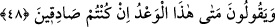
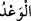
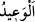
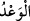
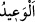
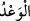

tâzim, diğeri ise Allah’ın yarattıklarına şefkattir. Kâfirler her iki hususu birden terk
etmişlerdir. Cimriler de; “Allah’ın mahrum edip fakir yaptığına biz de bir şey vermeyiz
Allah dileseydi elbette onları zengin yapardı” diyerek aynı bahaneye sarıldılar. Evet,
böyle bir söz yakîn, müşâhede ve ıyândan dolayı söylenmiş olsa faydalı, hatta îmanın
kemâlinin bağlı olduğu sırf tevhîd olurdu. Fakat bunlar taklîd, inkâr ve inâd yoluna
girmişlerdir. Allah kime hidâyet etmezse onu kimse hidâyete erdiremez.
Lokman (a.s.) zenginlerin yanına uğradığında: “Ey nimet ehli! En büyük nimeti
unutmayın.” derdi. Fakirlerin yanına uğradığı zaman ise: “İki kere aldanmaktan sakının.”
derdi.
Hz. Ali (r.a.)’ın şöyle dediği nakledilmiştir: “Mal dünya kazancı, sâlih amel ise âhiret
kazancıdır. Allah bazı topluluklara bunların her ikisini birden verir.”
Fudayl (r.h.): “Âhiret izzetini isteyen fakirlerle beraber otursun.” demiştir.
Allah Teâlâ’dan çok ihsanını ve bol lütfunu niyaz ederiz. Çünkü sebepleri yaratan
(müsebbibü’l-esbâb) O’dur. Kapının açılması O’ndandır.
Mesnevî’de der ki:
Biz Hakk’ın âilesi ve süt isteyen yavrularıyız.
Hz. Peygamber: “İnsanlar Allah’ın iyâli/âilesidir” buyurdu
Gökten yağmur veren,
Rahmetiyle ekmek vermeye de güç yetirir
“O her gün bir iştedir” âyetini oku da,
Onu işsiz güçsüz bilme
48. Onlar: “Eğer gerçekten doğru söylüyorsanız, bu tehdit ne zaman
gerçekleşecektir?” derler.
“Onlar:” Mekkeliler inkâr ederek ve imkânsız görerek Rasûlullah (s.a.)’e ve
mü’minlere: “Eğer gerçekten” bu tehdidinizde “doğru söylüyorsanız” onun ne zaman
olacağını söyleyin. Kıyametin kopacağına, hesap ve cezâya dâir “bu tehdid ne zaman
gerçekleşecektir?” derler.”
Burada yakına işâret için kullanılan “bu” zamiri, ya alaya almak için ya da tehdidin
yakın olması bakımından kullanılmıştır.
“ kelimesi hayır, şer, fayda ve zararda kullanılır. “ ise özel olarak şerde
kullanılır. Bu âyette “ her iki hususu da içerir. Çünkü bu vaad hem kıyameti, hem de
kulların amellerine verilecek karşılığı ifâde etmektedir. Kişinin ameli hayır ise hayır,
şer ise şer. Keşfü’l-esrâr’da der ki: “Burada “ değil de “ lafzının
zikredilmesi, eğer bu vaad hak ise kâfirlerin kendileri için Allah katında güzellik